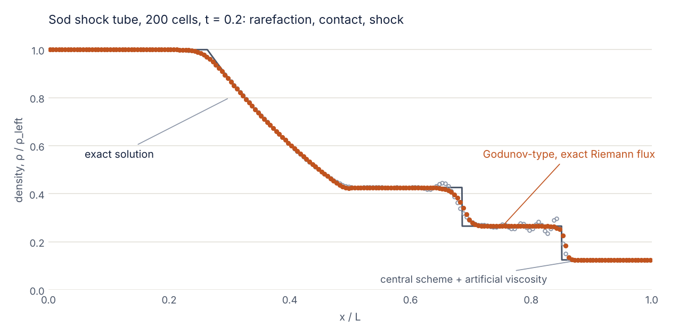
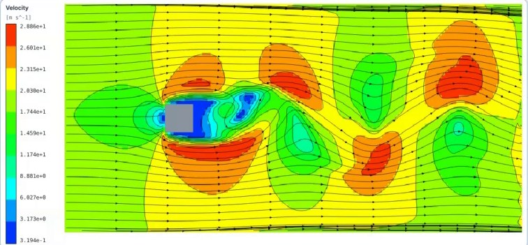

What is solved
The unsteady Euler equations of a compressible gas in conservative form, on a uniform Cartesian grid:
U = [ρ, ρu, ρv, ρw, ρE], F = [ρu, ρu² + p, ρuv, ρuw, (ρE + p)u]
p = ρRT, R = cp − cv, E = e(T) + ½|V|²
The gas has constant cp and cv, or a table cp(T), cv(T) for a thermally perfect gas. The same state layout is kept for the viscous models that come next.
A grid built from the STEP model
- The box is the model with margins on every side; the cells are cubes of one size, for example 80 mm for a 3 m frame.
- Each part is sampled inside every cell to get its solid fraction. A hollow tube counts with its outer shape: it blocks the wind like a bar. Openings in a welded frame stay open.
- The threshold for a solid cell is chosen so that the frontal area of the grid along the wind equals the frontal area of the real geometry. Thin members are partly lost, thick ones partly widened, and the blockage is kept. The grid report shows both areas and both volumes before anything is solved.
A Riemann problem on every cell face
Finite volumes: every cell keeps its mass, momentum and energy, and changes only through the fluxes across its six faces.
- Reconstruction. Density, velocity and pressure are taken as linear inside a cell, with the minmod limiter, so that no new extrema appear at shocks. Next to a wall the scheme drops to first order.
- Face flux. The two states on a face are treated as a discontinuity that decays. The exact solution of this Riemann problem gives Godunov’s flux: contact pressure by Newton iteration, then the state on the face is picked from the shock, the rarefaction fan or the star region. HLLC (about three times cheaper, close to exact) and Rusanov (the most diffusive) are available as options.
- Time. Explicit two-stage Runge–Kutta, step limited by the Courant number (CFL ≤ 0.8). The run starts from rest and the wind comes on smoothly, so there is no start-up shock.

First check: the Sod shock tube, computed by the package itself. The Godunov-type scheme follows the rarefaction, contact and shock of the exact solution without oscillation (density between the rarefaction and the contact 0.4260, exact 0.4263). A central scheme with artificial viscosity rings at both discontinuities.
What happens at the walls and at the edges of the box
- Parts and ground are slip walls: no mass or energy through the face, only the wall pressure pw = p + ½ρun|un| in the momentum flux and in the force.
- Inflow is given by total pressure, total temperature and direction; the outgoing Riemann invariant comes from inside. A body that pushes back on the flow does not add total pressure.
- Other sides are open by Riemann invariants along the normal, so pressure waves leave the box instead of reflecting.
Mach-number similarity
At 20 m/s the Mach number is about 0.06, and an explicit compressible scheme would need about five times more steps. The flow is solved at Mach 0.3 with the same air state and scaled back: velocities by U/Us, pressure differences and forces by (U/Us)². The small compressibility effect at Mach 0.3 is not removed by the scaling; a Mach term in the tuning tables brings sharp sections back to the calibration point.
Known flows first, then a correction by member shape

Vortex street behind a square cylinder at 10 cells across, plane flow.
An inviscid solver has no Reynolds number: the wake comes from the numerical viscosity of the scheme on the grid. So we measure what the scheme gives on isolated cylinders and compare it with experiment.
| Section | Cd experiment | Cd solver | Strouhal, experiment | Strouhal, solver |
|---|---|---|---|---|
| square | 2.16 | 1.80 | 0.13 | 0.160 |
| circle (subcritical) | about 1.2 | 1.34 | 0.20 | 0.196 |
| rounded square, r/D 0.2 | about 1.2 | 1.30 | – | 0.193 |
| plate across the wind | 2.0 | 2.50 | – | 0.197 |
| rectangle, length 0.5 D along the wind | 2.5 | 1.65 | 0.13 | 0.18 |
| rectangle, length 2 D along the wind | 1.59 | 1.64 | 0.08–0.09 | 0.171 |
Experiment: Norberg, J. Wind Eng. Ind. Aerodyn. 49 (1993); Okajima, J. Fluid Mech. 123 (1982); circle from standard subcritical data. Solver: 10 cells across D, Mach 0.3.
- Drag can be tunedEach member is cut across its axis: caliber D, corner radius r/D, length along the wind l/D. The factor Cd experiment / Cd solver is weighted by frontal area.
- In criterial formCd = C·Ren by ranges on the member caliber, as in heat-transfer practice; round tubes are held at their rough-surface value, not at the drag crisis.
- Frequency cannotThe Strouhal number stays at 0.16–0.20 for every shape. Shedding frequency is not taken from the Euler solution.
Access platform, 20 m/s
The video was recorded with the first tuning table (649 N). The current criterial tuning gives the figures below.
- 597 N computedforce along the wind from the wall pressures
- 616 N tunedafter the correction by member shape; an independent hand estimate gives 650–750 N
- 191 235 cells80 mm grid, 123 members, about 35 minutes on one processor core
Our own design. Preliminary inviscid estimate: not a wind load according to a standard and not a stability statement.
Known limits, stated up front
- No boundary layers and no turbulence; wakes come from numerical viscosity only.
- Members thinner than a cell are partly lost or widened; the grid report shows by how much.
- A 1 m margin around the model blocks the flow, so forces come out on the high side. The wind is uniform, without a profile over height.
- Next on the same grid: laminar Navier–Stokes, k-ε and SST turbulence models, heat transfer.
Please do not hesitate to contact us for details: turbotechnologies@email.cz · back to the case studies